pacman::p_load("tidyverse", "janitor", "gtsummary", "epikit","here", "epitools", "lubridate", "openxlsx", "readxl", "rio")2 Preparación del ambiente de trabajo
2.1 Como se instala R y Rstudio®
El primer paso para esta tarea es descargar el programa R, que se encuentra en la página web https://cran.r-project.org/ . en esta hay varias versiones dependiendo que sistema operativo estás usando, ya sea Windows, macOS o Linux.
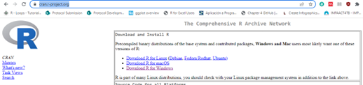
Luego de descargarlo puedes instalarlo inmediatamente usando el ejecutable (para Windows y macOS) o la forma como se instalan software in Linux. Para este manual estamos en un ambiente de Windows, luego de instalar podemos acceder a la consola de R (una pantalla con un cursor parpadeando donde podemos escribir)
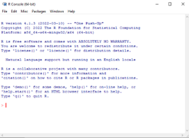
Aunque ya hayamos instalado R, al menos que seamos muy expertos en su uso, que conozcamos bien las sintaxis de las funciones, que objetos (más tarde veremos lo que son los objetos) están cargados en la memoria, entre otras cosas (¡también se puede usar como una simple calculadora!), es muy complicado usar solamente la consola, por lo que tenemos disponible aditamentos o accesorios que nos permiten trabajar más fácil con R, así como su aprendizaje. Para este manual el aditamento que usaremos es Rstudio de Posit®.
2.1.1 Descargar e instalar Rstudio
Ahora vamos a instalar Rstudio, para esto vamos a descargarlo de la siguiente página web, Descarga de Rstudio donde vamos a buscar la versión gratuita de escritorio para para el sistema operativo que estamos usando.
En caso de que estés usando Linux, están las instrucciones en la página de como hacerlo, la versión de Windows y macOS es un ejecutable.
Luego de descargar la ultima versión disponible procedemos a instalar Rstudio, haciendo clic en el ejecutable, la instalación (en la versión de Windows por ejemplo) es muy similar a cualquier otro software que donde te pregunta el lugar donde será instalado y varias ventanas donde se ve el progreso de instalación. Si todo salió bien, es decir que se instaló sin errores, pues tendremos disponible en la barra de acceso directo y en el escritorio, (si elegimos esta opción durante la instalación) también tendremos un acceso directo.
Si tienes Windows, te compartimos el paso a paso en este video para descargar e instalar R y también R Studio Desktop.
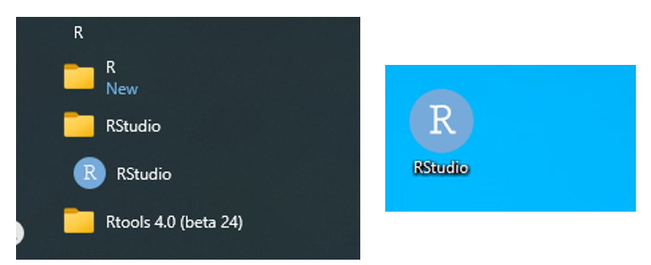
Otro software que se debe instalar si el sistema operativo que usas es Windows es rtools, dado que algunos paquetes necesitan que esté instalado para funcionar de forma correcta.
Este se adquiere desde la página de Descarga rtools y elige la versión más reciente y descarga el formato ejecutable (termina en “installer”) en cualquier unidad de almacenamiento. Su instalación sencilla, solo ejecutar el programa y hacer clic en siguiente las veces que sea necesario.
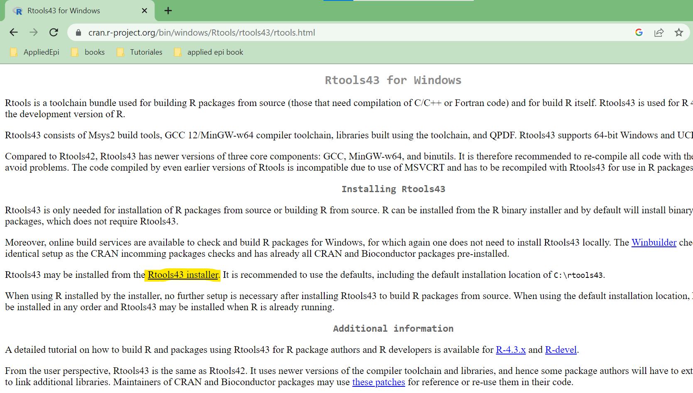
2.2 Interfaz de Rstudio®
Para facilitar el aprendizaje y uso de R, vamos a usar RStudio que es un entorno de desarrollo integrado o IDE (Integrated Development Environment) y tiene la gran ventaja de que hay mucha documentación sobre su uso, es muy cómoda de trabajar porque nos ayuda con la escritura de los códigos, la organización de los archivos, tiene varios visores o paneles para ver los códigos, las salidas, los objetos cargados y otras ayudas más (Figura 5). RStudio ha permitido la difusión del uso de R, lo que ha permitido la propagación de su uso en todas las áreas donde se hace análisis de datos.
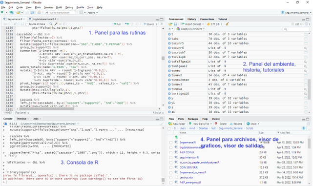
Panel de las rutinas: este panel es el editor de texto donde vamos a escribir los códigos (rutinas) que vamos a usar para nuestras tareas, como las tablas, los gráficos, etc., que son automáticamente ejecutadas en la consola de R. Cada rutina se puede guardar como un archivo (muy similar a un archivo de texto normal), la característica más importante de este panel es que nos permite ver si el código tiene errores, pues a veces la falta de una simple coma o un caracter nos arroja error cuando ejecutamos comandos. También nos ofrece la herramienta de autocompletar y nos facilita mucho la organización del código. Para ejecutar una línea de código simplemente ponemos el cursor al inicio o al final de la línea y presionamos Ctrl+Enter o en el botón “run”, mientras que para ejecutar la rutina completa, hacemos clic en el botón “source”. Más adelante veremos varios ejemplos.
Panel del ambiente de trabajo o panel de objetos cargados: en este panel podemos ver cuales objetos tenemos cargados en la memoria del sistema, y nos permite ver qué tipo de objeto es (si es un dataframe, un vector, una matriz, una función, una lista). Esto nos ayuda a seguir el trabajo que vamos realizando, por ejemplo, cuando cargamos una base de datos desde un archivo de Excel en un objeto dataframe podemos ver cuantas filas y variables tiene el archivo. También a través de este panel podemos salvar la sesión de trabajo, esto es útil cuando hacemos una pausa y queremos retomar más adelante lo que estábamos haciendo.
Consola de R: este es el lugar donde ocurre todo, puedes directamente escribir los comandos, las funciones, etc., pero para esto tenemos el panel de las rutinas, aquí también vas a ver los mensajes de errores cuando ejecutas una rutina o un comando, y por cada línea que se escribe se presiona “enter” para ejecutar los comandos. La ventaja más grande de utilizar RStudio es que hasta en la consola te identifica si hay errores o comandos incompletos y autocompletar.
Panel para archivos, visor de gráficos y de salidas: en este panel tenemos varias ventanas donde nos permite ver los archivos disponibles (muy parecido al explorador de Windows o a la carpeta de Documentos de tu computadora). A través del menú de este panel podemos crear carpetas, borrar, mover o copiar archivos, también podemos definir el directorio de trabajo (vamos a ver más adelante en detalle qué es el directorio o lugar de trabajo), a la derecha de Archivos o Files está el visor de gráficos (Plots), que podemos ampliar y poder copiar el gráfico que se está presentando y más a la derecha está el visor de salidas (Viewer), como tablas y datos en formato HTML. También en este panel está la ventana para instalar paquetes (término muy importante que lo veremos más adelante) y la ventana de ayuda (Figura 6).
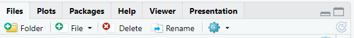
Figura 6.
Antes de comenzar a trabajar puedes ir familiarizándote con esta interface. En RStudio hay muchas opciones que iremos explicando en la medida que vayamos avanzando, mientras tanto, te mostrados dos herramientas interesantes del menú principal de RStudio: Tools y Help.
Si vas al menú principal de RStudio, puedes entrar en la sección que dice “Tools” y dentro del menú desplegable seleccionas la opción de “Global Options” (al final del menú desplegable), allí encontrarás un menú, y dentro de “Appearance” está la opción “Editor theme” donde podrás cambiar los colores y el tipo de letra de las ventanas, así podrás para adaptar el ambiente a tu gusto. En Ayuda (Help) puedes encontrar los accesos directos para usar el teclado, por ejemplo, salvar la rutina en la que estás trabajando, reiniciar R, ejecutar toda la rutina, entre otros atajos. En la Figura 7 te mostramos cómo llegar a cada una de estas herramientas.
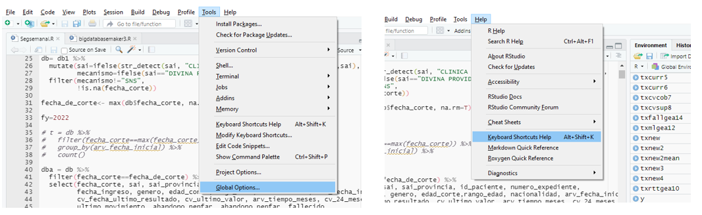
2.3 Instalación de Paquetes (librerías de funciones)
Los paquetes son extensiones para añadir más funcionalidades a R. Es quizás la razón por la cual R es ahora mismo una de las mejores herramientas para trabajar con datos dada la cantidad de paquetes específicos para realizar tareas como hacer tablas por ejemplo. En la literatura, los paquetes se identifican con { }, ejemplo: {tidyverse} y los logos son una figura dentro de un hexágono.
Con respecto a la instalación de paquetes, usualmente estos deben estar publicados en CRAN (Aquí el enlace) y se instalan desde el panel de paquetes (“Packages”).
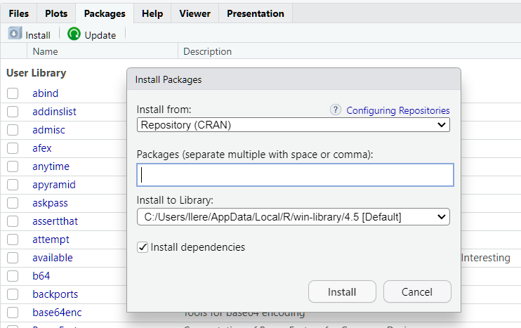
2.4 Como instalar y cargar un paquete en R
Después de instalar R, Rstudio solo tenemos las funcionalidades que trae R base, que nos permiten hacer muchas cosas sin tener que instalar nada más, pero podemos hacer que R sea más completo, ahora vamos a ver que es un paquete y su importancia.
Como R es un lenguaje de programación por lo tanto podemos crear programas o conjunto de funciones y estos programas podemos exportarlos para luego usarlos más adelante.
Estos programas o complementos aumentan la capacidad de R a través de funciones o comandos, por ejemplo, R base, no nos permite exportar directamente los resultados o salidas en formato Excel o crear tablas con formato de forma directa. Por lo tanto, los paquetes o subprogramas hacen que R sea más que solo un lenguaje de programación.
Hay paquetes creados por epidemiólogos, para epidemiólogos como el epitools (Tomas J. Aragon) (aragon2020?) o epikit (Zhian N. Kamvar)(spina2023?) que nos permiten con pocos comando o funciones hacer tareas como calcular medidas de asociación (OR, Riesgo relativo) y facilitar los análisis en epidemiología y otros paquetes que hacen las tareas de análisis de datos como son el openxlsx (Philipp Schauberger)(schauberger2023?) para manipular y crear archivos de Excel o el muy famoso y aclamado paquete tidyverse (Hadley Wickham)(wickham2023?)del cual hay este paquete hay libros escritos para el procesamiento y manejo de datos por mencionar algunos.
Los paquetes nos permiten mejorar sobremanera nuestra productividad en general. Cada vez que iniciamos una sesión con Rstudio, en nuestras rutinas debemos cargar los paquetes que vamos a usar.
Dado que R es una plataforma colaborativa, cuando un paquete es creado pasa por un proceso de validación antes de ser publicados en el repositorio de R. Es por esto que, para su instalación debemos saber si están disponibles. Los paquetes, usualmente, después de ya ser validados, son publicados en el repositorio de R (The Comprehensive R Archive Network o CRAN) que es la página donde descargamos R. También pueden estar disponibles en otras páginas donde podemos descargarlos e instalarlos manualmente. Después de instalar un paquete solo es necesario verificar si ha sido actualizado, tal como haces con cualquier otro programa.
Usualmente los autores de los paquetes tienen tutoriales o páginas llamadas “Vignettes” o viñetas donde podemos ver las funcionalidades y tutoriales. Por ejemplo, ejemplo ingresa en la barra de búsqueda en tu explorador estas palabras: “R package epitools”, y aparecerán muchos resultados para diferentes tareas. Sigue estos pasos para verificar si un paquete existe buscando directamente desde RStudio:
- Ir al panel de archivos
- Hacer clic en la ventana de paquetes o “Packages”
- Hacer clic en “install”. Aparecerá una ventana donde escribirás el nombre del paquete. Si el paquete existe en CRAN, aparecerá en un listado y lo seleccionarás
- Hacer clic en “install”.
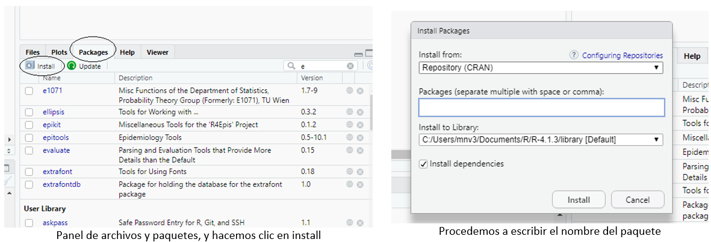
Si el paquete no está disponible en CRAN pero si en la web y podemos descargarlo y cambiar donde dice “install from” a “package archive file” y buscar en el disco duro y proceder a instalar (es muy raro que se de este caso y los paquetes que vamos a instalar todos están disponible en CRAN).
La otra forma de instalar los paquetes es directamente desde la consola o en un archivo de rutina usando el la función install.package() donde escribimos entre comillas el nombre del paquete que queremos instalar.
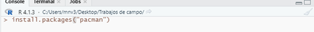
Luego de esta introducción sobre qué es un paquete y cómo se instala, vamos a hacer el siguiente ejercicio de instalar varios paquetes que usaremos de forma constante en los ejercicios y tareas contenidos en este manual. Ya sea directamente en la consola (ver imagen anterior), o a través del panel de archivos, vamos a instalar este paquete “pacman” (Tyler Rinker) que es un paquete para manejar paquetes y nos ahorrará muchos pasos, por ejemplo, detecta si un paquete necesario está instalado o no, y procede a instalarlo, o ayuda a instalar paquetes desde otras fuentes alternativas a CRAN. Después de instalarlo podemos ver en la consola el mensaje de que se instaló correctamente (package ‘pacman’ successfully unpacked and MD5 sums checked).
En la rutina que comenzamos hace un momento atrás vamos a hacer la siguiente tarea:
- Escribe o copia y pega el siguiente comando (recuerda, para ejecutar un comando o varios selecciona estos y presiona Ctrl+Enter o clic en “Run”):
Espera un momento si es la primera vez que se ejecuta para que así se instalen los paquetes que están en el comando.. Antes de continuar, vamos a explicar el comando anterior:
En Rstudio, en el editor de rutinas o en la misma consola, cuando queremos ver las funciones o comandos disponibles en un paquete podemos escribir el nombre del paquete seguido de dos puntos nos aparecerá una ventana con un listado de dichas funciones, por ejemplo, este último comando usamos el paquete pacman y dentro de este paquete usamos la función de p_load (para cargar paquetes, que también los instala si no están ya instalados)
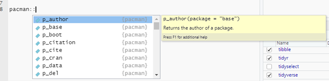
Luego de escribir el nombre del paquete y dos veces dos puntos, nos aparece el listado de funciones y también una ventana amarilla para ayuda de la función, que también aparece presionando F1 o haciendo una búsqueda en el panel de archivos en la ventana de ayuda, donde también se pueden ver los ejemplos de cómo usar las funciones.
Los paquetes que hemos instalado hasta este momento no los vamos a detallar por ahora, sino que, en la medida que vayamos haciendo los ejercicios, vamos a ir explicando para qué sirven a través de las funciones que traen cada uno. Es oportuno señalar que, dentro de los paquetes disponibles en R, existen paquetes útiles para facilitar el proceso de importar y exportar funciones específicas para las tareas del epidemiólogo, para hacer reportes y para facilitar el proceso de la gestión de los datos.
Para ver que paquetes tenemos cargados podemos escribir en la consola search()
search() [1] ".GlobalEnv" "package:rio" "package:readxl"
[4] "package:openxlsx" "package:epitools" "package:here"
[7] "package:epikit" "package:gtsummary" "package:janitor"
[10] "package:lubridate" "package:forcats" "package:stringr"
[13] "package:dplyr" "package:purrr" "package:readr"
[16] "package:tidyr" "package:tibble" "package:ggplot2"
[19] "package:tidyverse" "package:stats" "package:graphics"
[22] "package:grDevices" "package:utils" "package:datasets"
[25] "package:methods" "Autoloads" "package:base" Los dos capítulos siguientes son muy importantes. Debes familiarizarte con ellos porque son los fundamentos para poder trabajar en R, veremos ejemplos de las sintaxis de las expresiones, los diferentes tipos de objetos de datos, y a medida que vayamos practicando se irá haciendo más fácil entender el código, las funciones y las operaciones que hacemos. Te recomendamos que, aparte de este manual, abundes más sobre los temas que verás a continuación para que agilices tu proceso de aprendizaje con R.